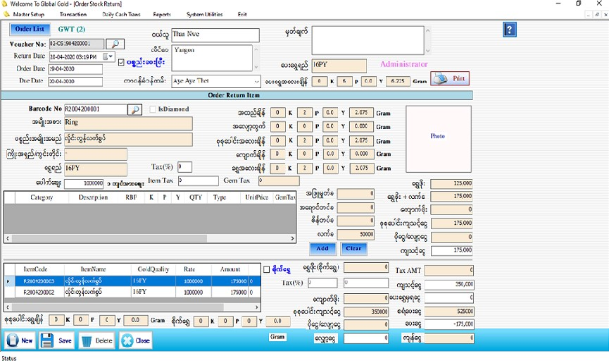

Order Stock Return Setup

- မှတ်ချက်- အပ်ထည်ပြန်ရွေးခြင်း Form ကိုအသုံးပြုမည်ဆိုပါက အရင်ဆုံးအပ်ထည်လက်ခံထားသည်များကို Stock Setup Form တွင်ဘားကုတ်သတ်မှတ်ထားပြီးဖြစ်ရပါမည်။Order Voucher No ပေါ်မူတည်ပြီးဘားကုတ်သတ်မှတ်ထားခဲ့ သောကြောင့် Barcode No ၏ဘေးရှိမှန်ဘီလူးကိုနှိပ်လိုက်ပါက ထို Order Voucher No နှင့်ဆိုင်သောဘားကုတ်များ ကိုသာတွေ့မြင်ရပါမည်။ Barcode Scanner နှင့်ဖတ်လျှင်လဲ ထိုအပ်ထည်ဘောင်ချာနှင့်သက်ဆိုင်သောဘားကုတ်ဖြစ် မှသာ သက်ဆိုင်ရာ Data များကျလာပါမည်။
- Transaction အောက်မှ Order Stock Return Form ကိုဖွင့်ပါ။
- အော်ဒါလက်ခံထားသောအထည်များကို ပြန်ရွေးမည့်အခါအသုံးပြုရမည့် Form ဖြစ်ပါသည်။
- Order List Button ကိုနှိပ်လိုက်ပါက အော်ဒါလက်ခံထားသော ဘောင်ချာများကို တွေ့မြင်ရပါမည်။ ထိုအထဲမှ လာရွေးသော အော်ဒါဘောင်ချာနံပါတ်ကို ရွေးချယ်ပါ။
- Return Date တွင် လက်ရှိရောက်နေသော Date ကိုပြပေးမည် ဖြစ်သည်။ Order Date တွင် Order မှာသည့် နေ့စွဲကိုပြပေးမည် ဖြစ်ပြီး Due Date တွင် Order ပစ္စည်းရမည့် နေ့စွဲကိုဖော်ပြပေးနေမည်ဖြစ်သည်။
- ပေးရွှေရည်နှင့် ပေးရွှေအလေးချိန်တို့တွင် Order Form တွင် ဖြည့်စွက်ခဲ့သည့်အတိုင်း ပြပေးနေလိမ့်မည်ဖြစ် သည်။
- Customer ကိုပေးရမည့်ဘားကုတ်ကို Barcode No ဘေးရှိမှန်ဘီလူးကိုနှိပ်ပြီး ရွေးချယ်ပါ (သို့) Barcode Scanner ဖြင့်ဖတ်ပါ။အဆိုပါ Barcode No. သည် Stock Set Up Form တွင် အော်ဒါ Check Box ကိုအမှန်ခြစ်ပြီး Order လက်ခံထားသော သက်ဆိုင်ရာအော်ဒါဘောက်ချာ No. ကိုရွေးချယ်ပြီး သတ်မှတ်ထားသော Barcode ဖြစ်ပါသည်။ Voucher No ပေါ်မူတည်ပြီး ဘားကုတ်သတ်မှတ်ထားခဲ့ သောကြောင့် Barcode No ၏ဘေးရှိမှန်ဘီလူးကိုနှိပ်လိုက်ပါက ထို Order Voucher No နှင့်ဆိုင်သောဘားကုတ်များ ကိုသာတွေ့မြင်ရပါမည်။ Barcode Scanner နှင့်ဖတ်လျှင်လဲ ထိုအပ်ထည်ဘောင်ချာနှင့်သက်ဆိုင်သောဘားကုတ်ဖြစ် မှသာ သက်ဆိုင်ရာ Data များကျလာပါမည်။
- အချက်အလက်များအားလုံးဖြည့်စွက်ပြီးပါက Add Button ကိုနှိပ်၍သိမ်းဆည်းနိုင်ပါသည်။Add လုပ်ပြီးသား ပစ္စည်းတစ်ခုအားပြန်လည်ပြင်ဆင်လိုပါက အောက်မှ Grid မှ မိမိပြင်ဆင်လိုသော Row ၏ ရှေ့ဆုံးကိုနှိပ်ပါက သက်ဆိုင်ရာ Row ၏ Data များကို အပေါ်တွင်ပြန်လည်ပြင်ဆင်နိုင်မည်ဖြစ်သည်။ပြီးနောက် Update Button အားနှိပ်ပါ။
- စရံပေးငွေ(စရံပေးငွေ+ဒုတိယစရံပေးငွေ) မှာ Order Form တွင်ဖြည့်စွက်ထားသည့်အတိုင်းကျနေလိမ့်မည်။
- ကျသင့်ငွေကိုဖြည့်စွက်ပါ။ ဥပမာ- စုစုပေါင်းကျသင့်ငွေ သည် 100500 ဖြစ်နေလျှင် အသားတင်ကျသင့်ငွေတွင် 100000 ရိုက်ထည့်လိုက်ပါက ပိုငွေ/လျော့ငွေ တွင် -500 ကိုတွေ့မြင်ရပါမည်။
- Customer ကိုဈေးလျှော့ပေးချင်ပါက လျှော့ပေးမည့်ငွေပမာဏကို လျှော့ငွေအကွက်တွင် ရိုက်ပေးရပါမည်။
- ဝယ်သူသည် order ပစ္စည်းအတွက် ရွှေပေးထားလျှင် ထိုပေးရွှေကိုဈေးဖြတ်ပြီး ပေးရွှေမှရငွေ တွင် ဖြည့်စွက်ပါ။ ထိုအခါ ပေးငွေတွင် (အသားတင်ကျသင့်ငွေ - (ပေးရွှေမှရငွေ+စရံပေးငွေ+လျှော့ငွေ)) ပုံစံဖြင့်တွက်ချက်ပြီးသား ကျန်ငွေပမာဏကိုတွေ့မြင်ရပါမည်။
- ပြန်ရလာသောရွှေရည်နှင့်ပေးရွှေရည်သည်တူညီနေပါက ရွှေအချင်းချင်းရှင်းသည့်ပုံစံဖြင့်ပြုလုပ်နိုင်ပါသည်။ ထိုအခါခြားနား ရွှေချိန်ပေါ်မူတည်ပြီးစျေးတွက်ပေးပါမည်။
- Data များဖြည့်ပြီးပါက Save Button ကိုနှိပ်၍ သိမ်းဆည်းနိုင်ပါသည်။
- သိမ်းဆည်းပြီးသား Data များအား ပြန်လည်ကြည့်ခြင်း၊ ပြင်ဆင်ခြင်းများပြုလုပ်ချင်ပါက Order Voucher No ၏ ဘေးတွင် ရှိသော မှန်ဘီလူး button ကိုနှိပ်ပြီးပြန်လည်ကြည့်ရှုပြင်ဆင်ချင်သော Order Return Voucher အား ရွေးချယ် ပြီးပြင်နိုင် ပါသည်။
- Order Return Voucher ထုတ်လိုလျှင် Print Button ကိုနှိပ်၍ Voucher ထုတ်နိုင်ပါသည်။
- သိမ်းဆည်းပြီးသား ထည့်ပြီးသား Data များကို ဖျက်လိုလျှင် မှန်ဘီလူး button အားနှိပ်ပြီးရှာပါ။ ထို့နောက် မိမိဖျက်လိုသော Data ကို Delete Button ကိုနှိပ်၍ ဖျက်နိုင်ပါသည်။
- Order Return Voucher အသစ်ထည့်လိုပါက New Button ကိုနှိပ်ပြီး အသစ်ထည့်နိုင်ပါသည်။
- Order Stock Return Form အား အသုံးပြုပြီးပါက Close Button ကိုနှိပ်၍ ပိတ်နိုင်ပါသည်။